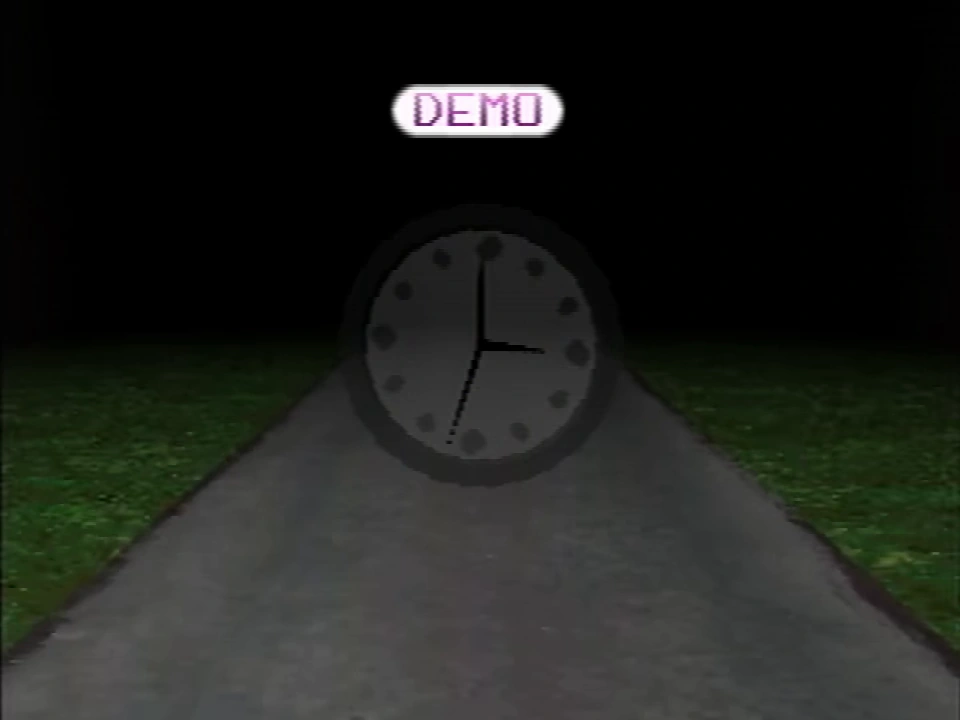

Room Impulse
This article is about a topic that has no widely accepted interpretation or clear details.

{kind=link}
The room impulse menu with it's corresponding options.
Room Impulse is one of the features in the secret menu. It is explored in Petscop 17.
Functionality

{kind=link}
Fanmade recreation of the sprite used for unfocused players
A room is first chosen for playback. After choosing a room, the gen of the room can be set.
During presumed playback, a dial can be turned to browse the various players running around the room, which are shown as guardians with red triangular heads, identical to how Paul appeared in Petscop 12. There appear to be 60 spots on the dial, and when an "occupied" position is on main view, the dial and the corresponding player are highlighted. The highlighted player can be focused, which causes it to display as a regular guardian, while the other players become invisible.
While focused players can change rooms, there are several instances where unfocused players appear to be blocked from leaving the current room.
Rooms
Twelve rooms are shown in Petscop 17. The player does not attempt to scroll any further down after reaching the house, so it is likely that there are more rooms which may be selected. Bear in mind that the names appear to be truncated to fit within the menu buttons.
| Room Names | Notes |
|---|---|
| anna-offic | See Office |
| cellar | |
| sort-test- | |
| gift-plane | See Gift Plane |
| grave | |
| hallway1 | |
| hallway2 | |
| house | See House |
| house-bath | |
| house-gara | See Garage |
| level1-room | Part of Even Care |
| level1-room | Part of Even Care |
{kind=link}
{kind=link}
History


{kind=link}
Room Impulse being used in the house during Petscop 17
In Petscop 17, the house is selected and set to gen 10. This appears to be the version of the house used in the Strange situation event. The current player appears to test the feature, but eventually returns to the default setting.
The focused avatar walks outside the house. Messages play, presumably from Rainer, as the player walks backwards along a particular path. They appear to be addressed to Carrie Mark, and informing her of who she is, while also asking her about her disappearance.
The second half of Petscop 22, where the player explores the school, is shown via Room Impulse.
Theories
{kind=link}

{kind=link}
The clock from the demo in Petscop 11
Room Impulse appears to be a tool that allows the user to play many recordings simultaneously.
The same dial appears on the Burn-in Monitor, so it is very likely that they are related.
The dial resembles a clock in several ways: The gradient appears to have 12 distinct sectors, and it rotates in increments of 6 degrees, allowing for 60 distinct orientations. The movement of the dial also resembles that of the clock which appears during a demo recording in Petscop 11, where the face rotates behind a stationary minute hand.
Some have suggested that Room Impulse may be a tool to train an artificial intelligence, and that the "Gen." field may refer to a generation in an evolutionary algorithm. This is unlikely however, as gens in Petscop appear to represent something else entirely.